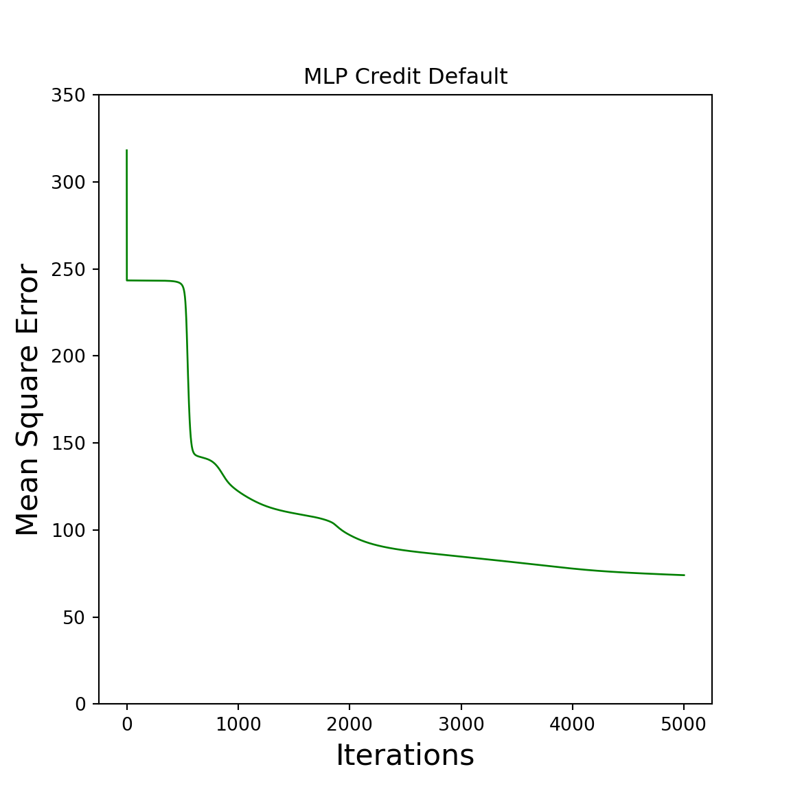
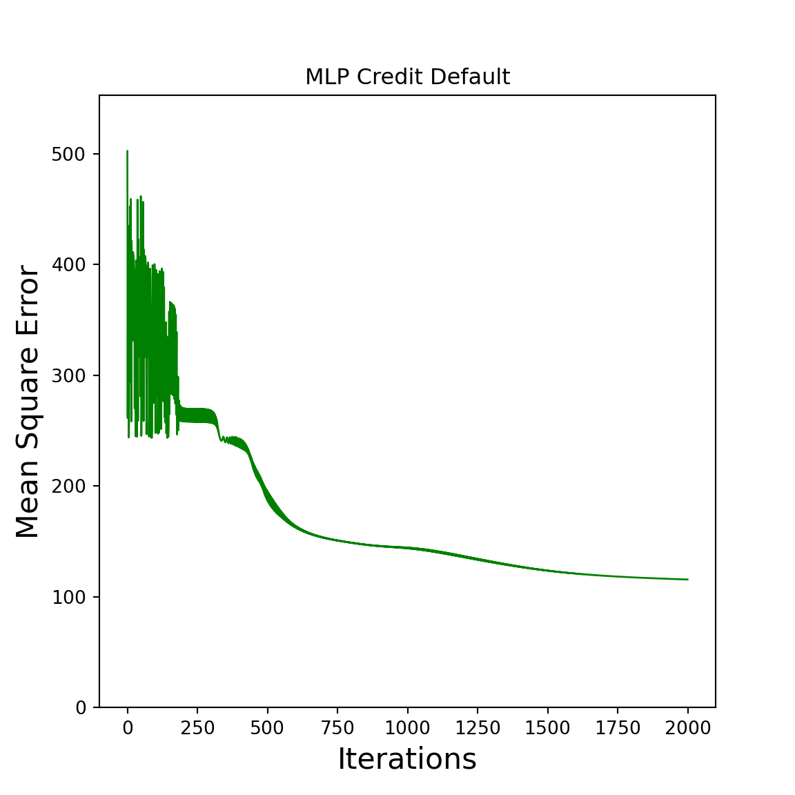

Chapter 6 Effect of batch size
First and foremost, do we need to distinguish between the following definitions that I discovered here:
- one epoch := one forward pass and backward pass of all the training examples.
- batch size := the number of training scenarios in one forward/backward pass. The higher the batch size, the more memory space will be needed.
- number of iterations := number of passes, each pass using [batch size] number of scenarios. To be clear, one pass = forward pass + backward pass (we do not count the forward pass and backward pass as two different passes).
I noted in the first chapter that the standard method for defining a NN is to cycle over all training data by selecting a random scenario until all possibilities have been used, resulting in one epoch. To make it easier, I changed it to pick all scenarios at once (full batch size). But what happens if the batch size is equal to the number of rows in the training dataset?
Unfortunately, there is no solid proof for the differences, but I did find a neat post that tries to explain it here. As a result, optimizing with the full batch size yields sharper minimaz, whereas optimizing with a lesser batch size yields to flatter minimaz. More information about the issue of speed vs. accuracy via batch size selection may be found here. He clearly outlines the issues and how switching to a dynamically growing batch size could be a smart option.
The underlying data determines the ideal hyperparameters like as bias, alpha, batch size, hidden neurons, and so on, according to what I’ve found so far. As a result, modifying the underlying dataset affects all of the ideal hyperparameters. Perhaps it would be more useful to test some hyperparameters on our Credit Default dataset and compare the outcomes.
6.1 Impact of diffrent hyperparameters
First of all do we add a batch_size parameter to the preview train() function and generate random batches that all contain distinct random integers in each batch. We will use the following function to generate the random batches:
import numpy as np
import matplotlib.pyplot as pyplot
import pandas as pd
from sklearn.metrics import confusion_matrix
import math as ma
import time
np.warnings.filterwarnings('ignore', category=np.VisibleDeprecationWarning)
def generate_random_batches(batch_size, full_batch_size):
batches = np.arange(full_batch_size)
np.random.shuffle(batches)
return(np.array_split(batches, ma.ceil(full_batch_size/batch_size)))
generate_random_batches(3, 10)## [array([0, 8, 9]), array([4, 1, 5]), array([6, 2]), array([3, 7])]Now do we need to adjust the train() function to iterate over all batches:
def train(X, Y, hidden_layer_neurons, alpha, epochs, batch_size):
n_input = len(X[0])
n_output = len(Y[0])
W = generate_weights(n_input, n_output, hidden_layer_neurons)
errors = []
batches = generate_random_batches(batch_size, full_batch_size = len(X))
for i in range(epochs):
error_temp = np.array([])
for z in range(len(batches)):
IN = []
OUT = []
grad = [None]*len(W)
for k in range(len(W)):
if k==0:
IN.append(add_ones_to_input(X[batches[z],:]))
else:
IN.append(add_ones_to_input(OUT[k-1]))
OUT.append(forward(x=IN[k], w=W[k]))
error_temp = np.append(error_temp, Y[batches[z],:] - OUT[-1])
for k in range(len(W)-1,-1, -1):
grad = backward(IN, OUT, W, Y[batches[z],:], grad, k)
for k in range(len(W)):
W[k] = W[k] + alpha * (IN[k].T @ grad[k])
errors.append(error_temp)
return W, errorsAnd all the previes created functions, dataloading and transformations are:
data = pd.read_csv("example_data/credit_risk_dataset.csv").fillna(0)
data = data.replace({"Y": 1, "N":0})
data["person_home_ownership"] = data["person_home_ownership"].replace({'OWN':1, 'RENT':2, 'MORTGAGE':3, 'OTHER':4})
data["loan_intent"] = data["loan_intent"].replace({'PERSONAL':1, 'EDUCATION':2, 'MEDICAL':3, 'VENTURE':4, 'HOMEIMPROVEMENT':5,'DEBTCONSOLIDATION':6})
data["loan_grade"] = data["loan_grade"].replace({'A':1, 'B':2, 'C':3, 'D':4, 'E':5, 'F':6, 'G':7})
def NormalizeData(np_arr):
for i in range(np_arr.shape[1]):
np_arr[:,i] = (np_arr[:,i] - np.min(np_arr[:,i])) / (np.max(np_arr[:,i]) - np.min(np_arr[:,i]))
return(np_arr)
training_n = 2000
X_train = NormalizeData( data.loc[0:(training_n-1), data.columns != 'loan_status'].to_numpy() )
Y_train = data.loc[0:(training_n-1), data.columns == 'loan_status'].to_numpy()
X_test = NormalizeData( data.loc[training_n:, data.columns != 'loan_status'].to_numpy() )
Y_test = data.loc[training_n:, data.columns == 'loan_status'].to_numpy()
def generate_weights(n_input, n_output, hidden_layer_neurons):
W = []
for i in range(len(hidden_layer_neurons)+1):
if i == 0: # first layer
W.append(np.random.random((n_input+1, hidden_layer_neurons[i])))
elif i == len(hidden_layer_neurons): # last layer
W.append(np.random.random((hidden_layer_neurons[i-1]+1, n_output)))
else: # middle layers
W.append(np.random.random((hidden_layer_neurons[i-1]+1, hidden_layer_neurons[i])))
return(W)
def add_ones_to_input(x):
return(np.append(x, np.array([np.ones(len(x))]).T, axis=1))
def sigmoid(x):
return 1.0 / (1.0 + np.exp(-x))
def deriv_sigmoid(x):
return x * (1 - x)
def forward(x, w):
return( sigmoid(x @ w) )
def backward(IN, OUT, W, Y, grad, k):
if k == len(grad)-1:
grad[k] = deriv_sigmoid(OUT[k]) * (Y-OUT[k])
else:
grad[k] = deriv_sigmoid(OUT[k]) *(grad[k+1] @ W[k+1][0:len(W[k+1])-1].T)
return(grad)
def mean_square_error(error):
return( 0.5 * np.sum(error ** 2) )
def plot_error(errors, title):
x = list(range(len(errors)))
y = np.array(errors)
pyplot.figure(figsize=(6,6))
pyplot.plot(x, y, "g", linewidth=1)
pyplot.xlabel("Iterations", fontsize = 16)
pyplot.ylabel("Mean Square Error", fontsize = 16)
pyplot.title(title)
pyplot.ylim(0,max(errors)*1.1)
pyplot.show()
def test(X_test, W):
for i in range(len(W)):
X_test = forward(add_ones_to_input(X_test), W[i])
return(X_test)
def classify(Y_approx):
return( np.round(Y_approx,0) )Everything is loaded and set up. Now can we compare the time and the error for different batch_size:
# full batch size
np.random.seed(0)
start = time.time()
W_train, errors_train = train(X = X_train, Y = Y_train, hidden_layer_neurons = [11,4], alpha = 0.01, epochs = 5000, batch_size = 2000)
time_diff = time.time() - start
print("Time to train the NN: ", time_diff)
ms_errors_train = np.array(list(map(mean_square_error, errors_train)))
plot_error(ms_errors_train, "MLP Credit Default")
result_test = test(X_test, W_train)
print("Mean Square error over all testdata: ", mean_square_error(Y_test - result_test))
classified_error = Y_test - classify(result_test)
print("Mean Square error over all classified testdata: ", mean_square_error(classified_error))
print("Probability of a wrong output: ", np.round(np.sum(np.abs(classified_error)) / len(classified_error) * 100, 2), "%" )
print("Probability of a right output: ", np.round((1 - np.sum(np.abs(classified_error)) / len(classified_error))*100,2),"%" )
confusion_matrix(Y_test, classify(result_test))## Time to train the NN: 9.521212339401245
## Mean Square error over all testdata: 2402.2283244767077
## Mean Square error over all classified testdata: 2932.0
## Probability of a wrong output: 19.18 %
## Probability of a right output: 80.82 %
## array([[20193, 4113],
## [ 1751, 4524]], dtype=int64)# batch size = 100
np.random.seed(0)
start = time.time()
W_train, errors_train = train(X = X_train, Y = Y_train, hidden_layer_neurons = [11,4], alpha = 0.01, epochs = 5000, batch_size = 100)
time_diff = time.time() - start
print("Time to train the NN: ", time_diff)
ms_errors_train = np.array(list(map(mean_square_error, errors_train)))
plot_error(ms_errors_train, "MLP Credit Default")
result_test = test(X_test, W_train)
print("Mean Square error over all testdata: ", mean_square_error(Y_test - result_test))
classified_error = Y_test - classify(result_test)
print("Mean Square error over all classified testdata: ", mean_square_error(classified_error))
print("Probability of a wrong output: ", np.round(np.sum(np.abs(classified_error)) / len(classified_error) * 100, 2), "%" )
print("Probability of a right output: ", np.round((1 - np.sum(np.abs(classified_error)) / len(classified_error))*100,2),"%" )
confusion_matrix(Y_test, classify(result_test))## Time to train the NN: 23.323018550872803
## Mean Square error over all testdata: 2210.3693145823286
## Mean Square error over all classified testdata: 2559.5
## Probability of a wrong output: 16.74 %
## Probability of a right output: 83.26 %
## array([[21396, 2910],
## [ 2209, 4066]], dtype=int64)The full batch size is clearly faster than the smaller batch size, yet the smaller batch size has a lower error. Perhaps the ideal batch size is determined by the problem itself. If you have a low-dimensional input matrix and need a quick answer, full batch size is the way to go. If your dimensional input is large, you won’t be able to use a complete batch size since your RAM will jump off. I believe it is important to study the underlying data and choose a batch size that is appropriate for it. For example, in the blog article I cited at the beginning of the chapter, some situations may require a dynamic batch size that lowers over time to provide the best outcomes.
6.2 Appendix (complete code)
import numpy as np
import matplotlib.pyplot as pyplot
import pandas as pd
from sklearn.metrics import confusion_matrix
import math as ma
np.random.seed(0)
np.warnings.filterwarnings('ignore', category=np.VisibleDeprecationWarning)
data = pd.read_csv("example_data/credit_risk_dataset.csv").fillna(0)
data = data.replace({"Y": 1, "N":0})
data["person_home_ownership"] = data["person_home_ownership"].replace({'OWN':1, 'RENT':2, 'MORTGAGE':3, 'OTHER':4})
data["loan_intent"] = data["loan_intent"].replace({'PERSONAL':1, 'EDUCATION':2, 'MEDICAL':3, 'VENTURE':4, 'HOMEIMPROVEMENT':5,'DEBTCONSOLIDATION':6})
data["loan_grade"] = data["loan_grade"].replace({'A':1, 'B':2, 'C':3, 'D':4, 'E':5, 'F':6, 'G':7})
def NormalizeData(np_arr):
for i in range(np_arr.shape[1]):
np_arr[:,i] = (np_arr[:,i] - np.min(np_arr[:,i])) / (np.max(np_arr[:,i]) - np.min(np_arr[:,i]))
return(np_arr)
training_n = 2000
X_train = NormalizeData( data.loc[0:(training_n-1), data.columns != 'loan_status'].to_numpy() )
Y_train = data.loc[0:(training_n-1), data.columns == 'loan_status'].to_numpy()
X_test = NormalizeData( data.loc[training_n:, data.columns != 'loan_status'].to_numpy() )
Y_test = data.loc[training_n:, data.columns == 'loan_status'].to_numpy()
def generate_weights(n_input, n_output, hidden_layer_neurons):
W = []
for i in range(len(hidden_layer_neurons)+1):
if i == 0: # first layer
W.append(np.random.random((n_input+1, hidden_layer_neurons[i])))
elif i == len(hidden_layer_neurons): # last layer
W.append(np.random.random((hidden_layer_neurons[i-1]+1, n_output)))
else: # middle layers
W.append(np.random.random((hidden_layer_neurons[i-1]+1, hidden_layer_neurons[i])))
return(W)
def add_ones_to_input(x):
return(np.append(x, np.array([np.ones(len(x))]).T, axis=1))
def sigmoid(x):
return 1.0 / (1.0 + np.exp(-x))
def deriv_sigmoid(x):
return x * (1 - x)
def forward(x, w):
return( sigmoid(x @ w) )
def backward(IN, OUT, W, Y, grad, k):
if k == len(grad)-1:
grad[k] = deriv_sigmoid(OUT[k]) * (Y-OUT[k])
else:
grad[k] = deriv_sigmoid(OUT[k]) *(grad[k+1] @ W[k+1][0:len(W[k+1])-1].T)
return(grad)
def generate_random_batches(batch_size, full_batch_size):
batches = np.arange(full_batch_size)
np.random.shuffle(batches)
return(np.array_split(batches, ma.ceil(full_batch_size/batch_size)))
def train(X, Y, hidden_layer_neurons, alpha, epochs, batch_size):
n_input = len(X[0])
n_output = len(Y[0])
W = generate_weights(n_input, n_output, hidden_layer_neurons)
errors = []
batches = generate_random_batches(batch_size, full_batch_size = len(X))
for i in range(epochs):
error_temp = np.array([])
for z in range(len(batches)):
IN = []
OUT = []
grad = [None]*len(W)
for k in range(len(W)):
if k==0:
IN.append(add_ones_to_input(X[batches[z],:]))
else:
IN.append(add_ones_to_input(OUT[k-1]))
OUT.append(forward(x=IN[k], w=W[k]))
error_temp = np.append(error_temp, Y[batches[z],:] - OUT[-1])
for k in range(len(W)-1,-1, -1):
grad = backward(IN, OUT, W, Y[batches[z],:], grad, k)
for k in range(len(W)):
W[k] = W[k] + alpha * (IN[k].T @ grad[k])
errors.append(error_temp)
return W, errors
W_train, errors_train = train(X = X_train, Y = Y_train, hidden_layer_neurons = [11,4], alpha = 0.01, epochs = 2000, batch_size = 2000)
def mean_square_error(error):
return( 0.5 * np.sum(error ** 2) )
ms_errors_train = np.array(list(map(mean_square_error, errors_train)))
def plot_error(errors, title):
x = list(range(len(errors)))
y = np.array(errors)
pyplot.figure(figsize=(6,6))
pyplot.plot(x, y, "g", linewidth=1)
pyplot.xlabel("Iterations", fontsize = 16)
pyplot.ylabel("Mean Square Error", fontsize = 16)
pyplot.title(title)
pyplot.ylim(0,max(errors)*1.1)
pyplot.show()
plot_error(ms_errors_train, "MLP Credit Default")
def test(X_test, W):
for i in range(len(W)):
X_test = forward(add_ones_to_input(X_test), W[i])
return(X_test)
result_test = test(X_test, W_train)
print("Mean Square error over all testdata: ", mean_square_error(Y_test - result_test))
def classify(Y_approx):
return( np.round(Y_approx,0) )
classified_error = Y_test - classify(result_test)
print("Mean Square error over all classified testdata: ", mean_square_error(classified_error))
print("Probability of a wrong output: ", np.round(np.sum(np.abs(classified_error)) / len(classified_error) * 100, 2), "%" )
print("Probability of a right output: ", np.round((1 - np.sum(np.abs(classified_error)) / len(classified_error))*100,2),"%" )
confusion_matrix(Y_test, classify(result_test))
## Mean Square error over all testdata: 2330.8698549481937
## Mean Square error over all classified testdata: 2940.0
## Probability of a wrong output: 19.23 %
## Probability of a right output: 80.77 %
## array([[20516, 3790],
## [ 2090, 4185]], dtype=int64)